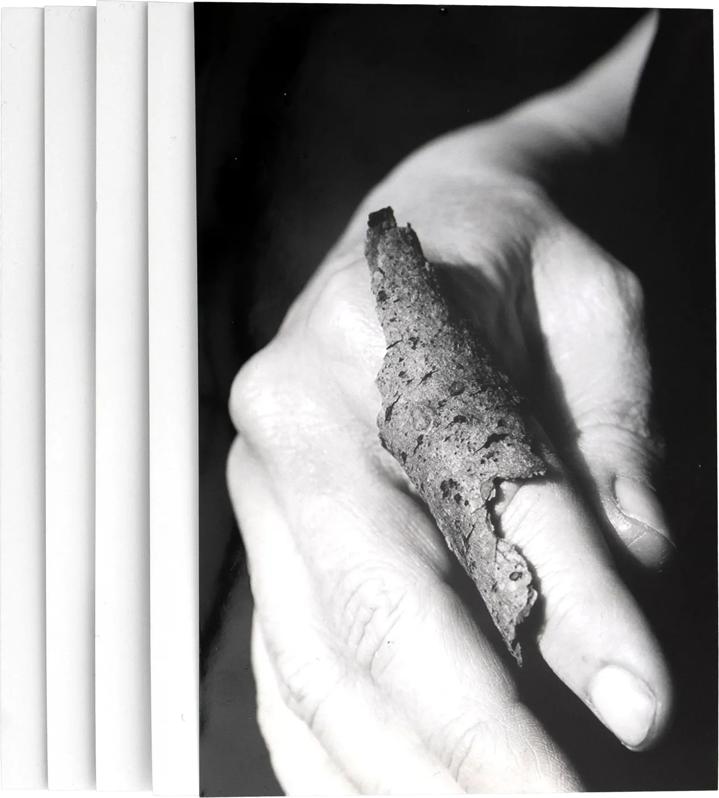
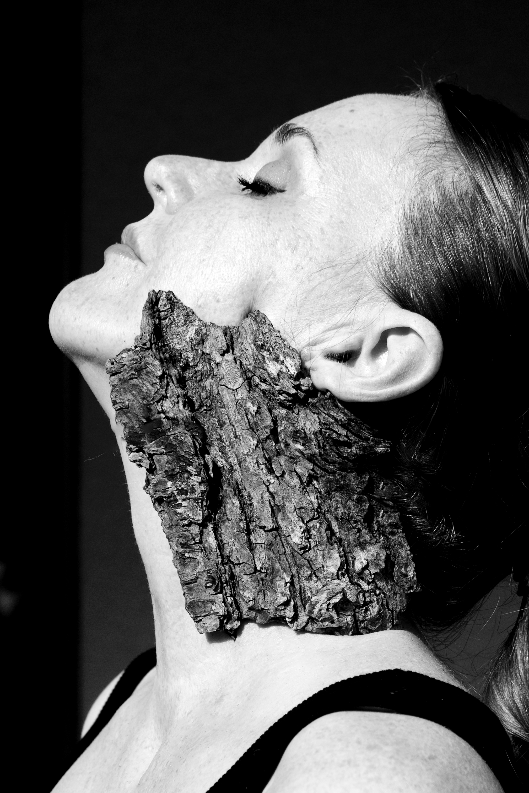
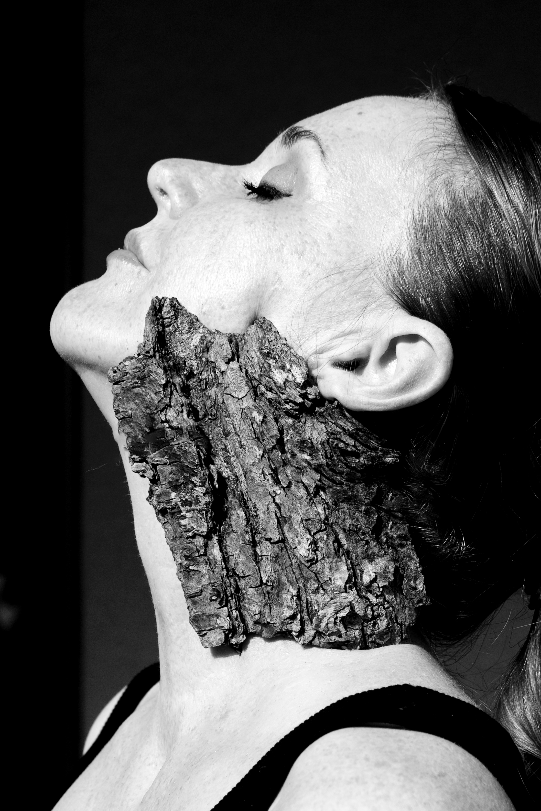
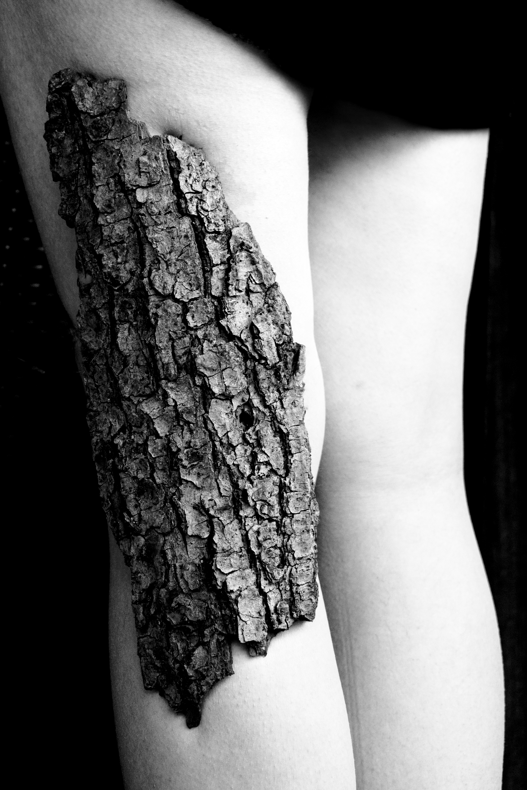
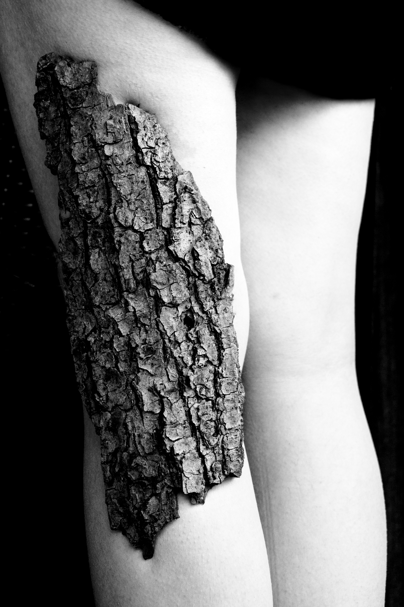

NICHTS, WOFÜR MAN SICH SCHÄMEN MUSS
In dieser fotografischen Serie steht die Hautkrankheit Neurodermitis im Fokus – eine chronische Erkrankung, die oft ausgeblendet oder verharmlost wird. Statt die betroffenen Stellen zu verstecken oder zu kaschieren, werden sie hier sichtbar gemacht. Sie erscheinen als Teil des Körpers und nicht als Makel. Die Bilder zeigen die häufig betroffenen Stellen als Nahaufnahmen und machen Mut, die eigene Haut zu akzeptieren. Ein Statement gegen Scham und für Selbstannahme.

 

 
